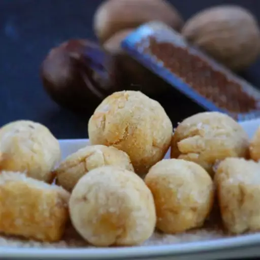

This is my first website and I'm extremly excited!
Chin-Chin is a fried snack popular in west africa.
Ingredient list
- 8 Cups all-purpose flour
- 1 Cup butter,at room temperature
- 3 Tablespoons butter,at room temperature
- 2 Teaspoons ground nutmeg
- 1/2 Cup milk
- 2 Tablespoon milk
- 1 Cup vegetable oil
Directions
Step 1
- Mix flour,1 cup plus 3 tablespoons butter,and nutmeg together
in a large bowl until well incorporated. Stir in 1/2 cup,
plus 2 tablespoons milk until dough comes together.
Step 2
- Roll dough 1/4-inch thick on a floured work surface and,
cut into small pieces.
Step 3
- Heat oil in a deep-fryer or large saucepan to 350 degrees F (175 degrees C),
Fry dough pieces in batches until they turn golden brown and float to
The surface, 3 to 5 minutes.
img
